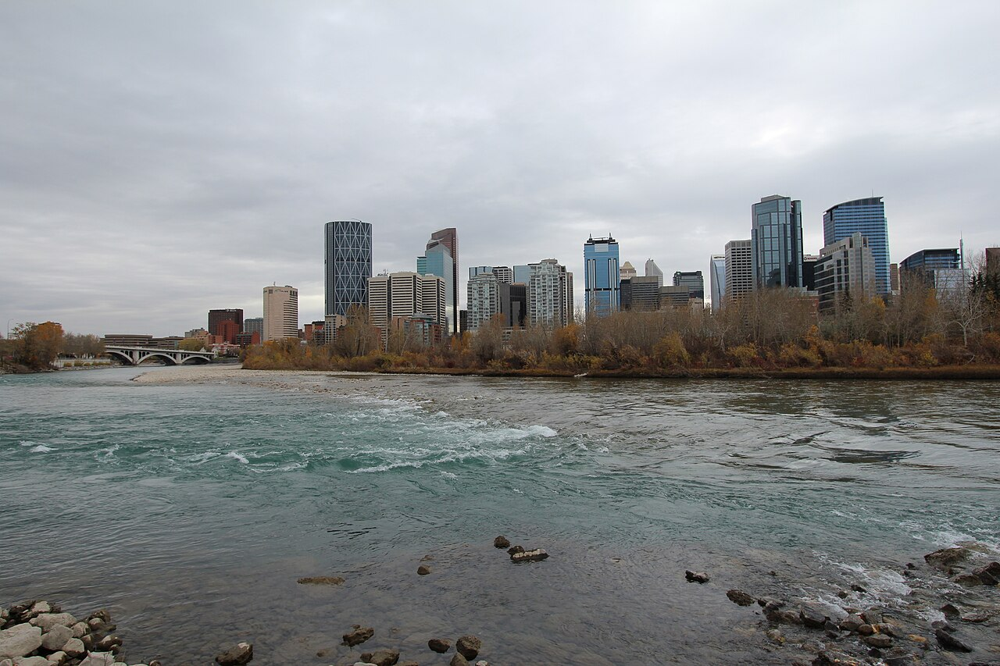

7/19 TPE 23:30→
YVR 轉機 2h20→
7/20 YYC 00:23→
7/25 YYC 21:55 → YVR 22:35→
7/28 YVR 02:00 → TPE 7/29 04:50

第 1 段Calgary + PETS
7/19（日）深夜 – 7/25（六）晚上
PETS 2026 主辦方活動保留：opening reception、Stampede 早餐、TELUS Spark gala、The Banquet、HotPETs 或湖區二選一、Banff hike。7/25 晚上固定飛 YVR。
看 Calgary 段 →
 第 2 段
第 2 段Vancouver
7/25（六）22:35 – 7/28（二）02:00
已改成 YVR 進、YVR 出，機場交通單純。7/26 和 7/27 是兩個完整遊玩日，最後一晚直接搭 Canada Line 去 YVR。
看 Vancouver 段 →
已訂機票
| 段 | 日期 | 航班 | 時間 | 注意 |
|---|---|---|---|---|
| 1 台北 → 溫哥華 | 7/19（日） | 長榮 BR010 777-300ER | TPE T2 23:30 → YVR M 19:40 | 飛行 11h10m，抵達後在 YVR 轉機。 |
| 轉機 溫哥華 | 7/19（日） | 轉機 2h20m | 19:40 → 22:00 | 需要領取並重新託運行李；航班異動後多出 45 分鐘緩衝。 |
| 1 溫哥華 → 卡爾加里 | 7/19（日）→ 7/20（一） | 長榮 BR3094 由 Air Canada AC2072 營運 737 MAX 8 | YVR M 22:00 → YYC 00:23 | 飛行 2h23m，抵 Calgary 後直接入住。 |
| 2 卡爾加里 → 溫哥華 | 7/25（六） | WestJet WS133 737 MAX 8 | YYC 21:55 → YVR M 22:35 | Banff hike 後當晚飛，抵達 YVR 後進市區飯店。 |
| 3 溫哥華 → 台北 | 7/28（二） | 長榮 BR009 777-300ER | YVR M 02:00 → TPE T2 7/29 04:50 | 實際是 7/27 深夜去機場。 |
最大注意點：去程 YVR 轉機已延長為 2 小時 20 分，但仍要領行李再託運。正常準點下時間已明顯較從容；7/19 抵達 YVR 後仍不要停留，先完成入境、取行李、重新託運與安檢。
總覽日程
| 日期 | 在哪 | 最新版安排 |
|---|---|---|
| 7/19（日）→ 7/20（一） | TPE → YVR → YYC | BR010 到 YVR，2h20m 轉機後搭 BR3094/AC2072 到 Calgary，7/20 00:23 抵達。 |
| 7/20（一） | Calgary | PR² workshop；晚上 PETS outdoor opening reception。 |
| 7/21（二） | Calgary | PETS Day 1；Stampede pancake breakfast、welcome smudge、第一場 rump session。 |
| 7/22（三） | Calgary | PETS Day 2；TELUS Spark Gala + poster session。 |
| 7/23（四） | Calgary | PETS Day 3 彈性；晚上 The Banquet University District。 |
| 7/24（五） | Calgary / Rockies | 仍保留二選一：HotPETs + ice cream break，或 Lake Louise + Moraine Lake 一日 tour。 |
| 7/25（六） | Banff → YYC → YVR | PETS Banff hike；21:55 搭 WS133 飛 Vancouver，22:35 抵達 YVR。 |
| 7/26（日） | Vancouver | 市區經典：Gastown / Waterfront、Stanley Park、Granville Island。 |
| 7/27（一） | Vancouver | 北岸吊橋 + Queen Elizabeth Park；晚上前往 YVR。 |
| 7/28（二）02:00 | YVR → Taipei | 長榮 BR009 直飛，7/29 04:50 抵台。 |
最新版已收斂為已訂航班版本，Calgary 7/25 晚上飛 Vancouver，回程搭長榮 BR009。